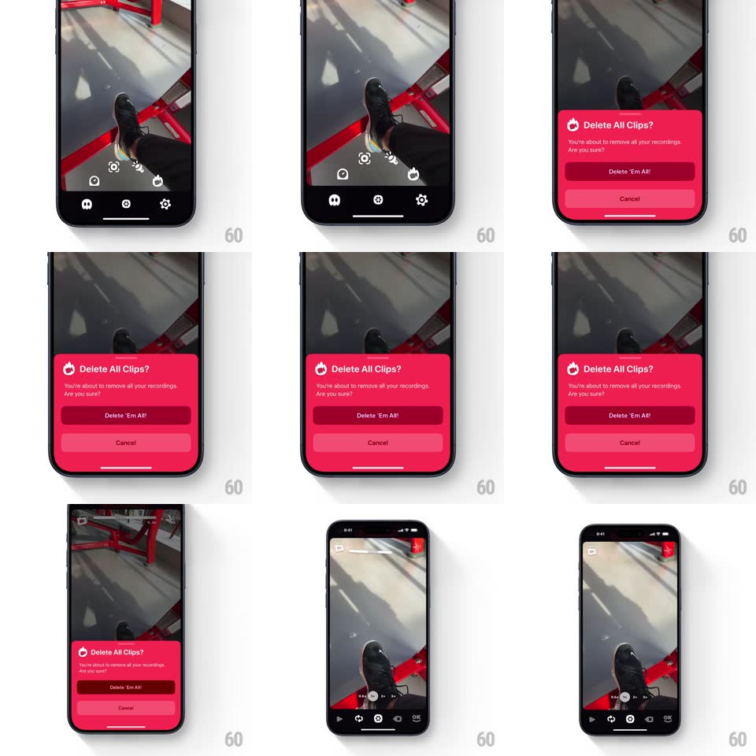

Media
Frame-by-frame

Rebuild this interaction 1:1: OK Video's delete-all confirmation - a vivid red bottom sheet springs up with a soft overshoot asking "Delete All Clips?", with dark "Delete 'Em All!" and quiet Cancel buttons, then drops away revealing the cleared timeline.

Rebuild this interaction 1:1: OK Video's delete-all confirmation - a vivid red bottom sheet springs up with a soft overshoot asking "Delete All Clips?", with dark "Delete 'Em All!" and quiet Cancel buttons, then drops away revealing the cleared timeline.
## Integration
Integration: stack-agnostic spec - springs given as stiffness/damping, timed motions as duration + curve; map every value to your framework and animation library of choice.
## Scene
Camera viewfinder with clips on the timeline. The sheet: saturated red card, flame icon, "Delete All Clips?" title, subcopy ("You're about to remove all your recordings. Are you sure?"), a dark maroon "Delete 'Em All!" button, a lighter red "Cancel" button.
## Motion spec
Pattern: overshooting danger sheet.
- Trigger: the sheet springs up from the bottom (spring ~260/18 - visible overshoot ~12px, settling with one bounce) while the viewfinder behind dims 40%.
- Content staggers: flame icon pops first (scale 0.6 -> 1, spring ~420/16), title 60ms later, buttons last (fade + 8px rise, 200ms).
- Confirm ("Delete 'Em All!"): the button flashes darker (150ms), the sheet drops straight down accelerating (280ms, ease-in), and the timeline's clip segments collapse inward all at once (300ms) leaving an empty bar.
- Cancel: the sheet slides down gently (spring ~320/26, no drama) and the viewfinder un-dims - a calmer exit for a calmer choice.
## Calibration
- The sheet is aggressively red (near #E8304F) - this is the app's one loud moment; danger is the brand.
- Overshoot on entry only; destructive confirmations should feel weighty arriving, fast leaving.
## Reduced motion
Sheet fades in over a static dim.
## Don't miss
- The confirm button is DARKER than the sheet, cancel is LIGHTER - inverted from the usual pattern, so the dangerous action reads as the heavy one.
- No haptic-free dismissal via backdrop tap - destructive intent must be explicit (button or nothing).